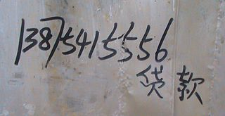
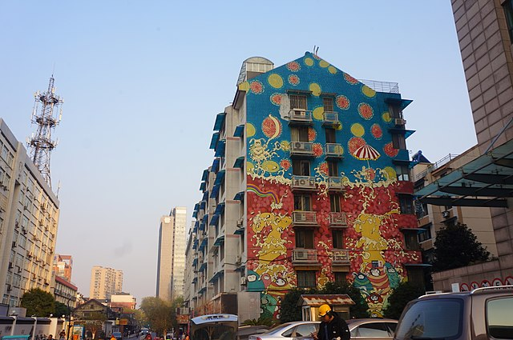
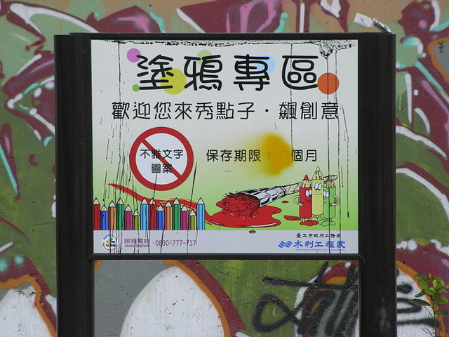

ASIA
GOVERNMENT RESPONSES
In China, Mao Zedong in the 1920s used revolutionary slogans and paintings in public places to galvanise the country's communist revolution.
In Hong Kong, Tsang Tsou Choi was known as the King of Kowloon for his calligraphy graffiti over many years, in which he claimed ownership of the area. Now some of his work is preserved officially.
In Taiwan, the government has made some concessions to graffiti artists. Since 2005 they have been allowed to freely display their work along some sections of riverside retaining walls in designated "Graffiti Zones". From 2007, Taipei's department of cultural affairs also began permitting graffiti on fences around major public construction sites. Department head Yong-ping Lee (李永萍) stated, "We will promote graffiti starting with the public sector, and then later in the private sector too. It's our goal to beautify the city with graffiti". The government later helped organize a graffiti contest in Ximending, a popular shopping district. Graffiti artists caught working outside of these designated areas still face fines up to $6,000 TWD under a department of environmental protection regulation. However, Taiwanese authorities can be relatively lenient, one veteran police officer stating anonymously, "Unless someone complains about vandalism, we won't get involved. We don't go after it proactively."
In 1993 in Singapore after several expensive cars were spray-painted, the police arrested a student from the Singapore American School, Michael P. Fay, questioned him, and subsequently charged him with vandalism. Fay pleaded guilty to vandalizing a car in addition to stealing road signs. Under the 1966 Vandalism Act of Singapore, originally passed to curb the spread of communist graffiti in Singapore, the court sentenced him to four months in jail, a fine of S$3,500 (US$2,233), and a caning. The New York Times ran several editorials and op-eds that condemned the punishment and called on the American public to flood the Singaporean embassy with protests. Although the Singapore government received many calls for clemency, Fay's caning took place in Singapore on 5 May 1994. Fay had originally received a sentence of six strokes of the cane, but the presiding president of Singapore, Ong Teng Cheong, agreed to reduce his caning sentence to four lashes.
In South Korea, Park Jung-soo was fined 2 million South Korean won by the Seoul Central District Court for spray-painting a rat on posters of the G-20 Summit a few days before the event in November 2011. Park alleged that the initial in "G-20" sounds like the Korean word for "rat", but Korean government prosecutors alleged that Mr. Park was making a derogatory statement about the president of ROK, Lee Myung-bak, the host of the summit. This case led to public outcry and debate on the lack of government tolerance and in support of freedom of expression. The court ruled that the painting, "an ominous creature like a rat" amounts to "an organized criminal activity" and upheld the fine while denying the prosecution's request for imprisonment for Park.
  SOUTHEAST ASIA
GLOBAL DEVELOPMENTS
There are also a large number of graffiti influences in Southeast Asian countries that mostly come from modern Western culture, such as Malaysia, where graffiti have long been a common sight in Malaysia's capital city, Kuala Lumpur. Since 2010, the country has begun hosting a street festival to encourage all generations and people from all walks of life to enjoy and encourage Malaysian street culture.